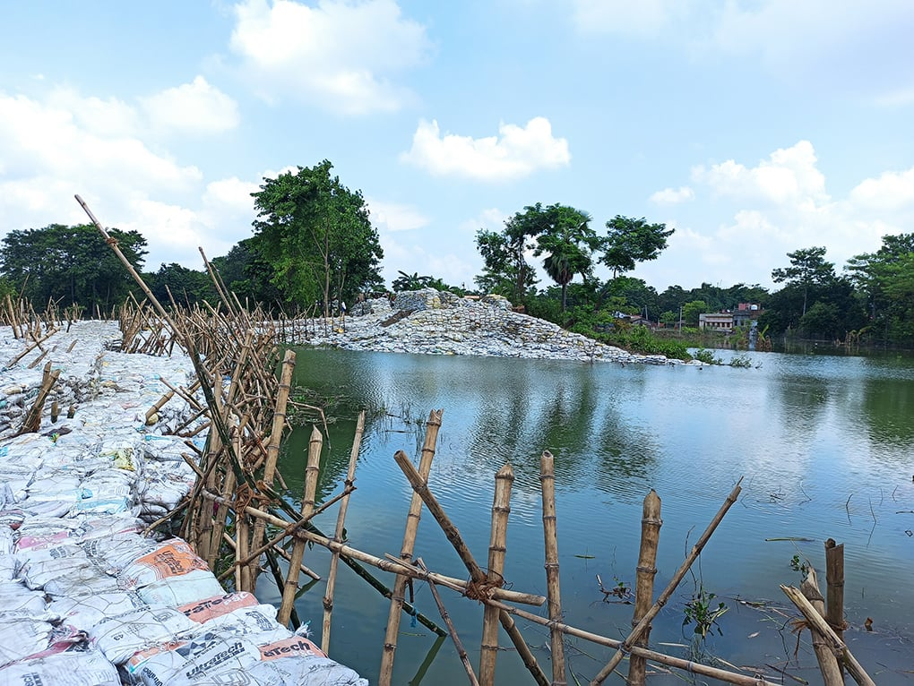
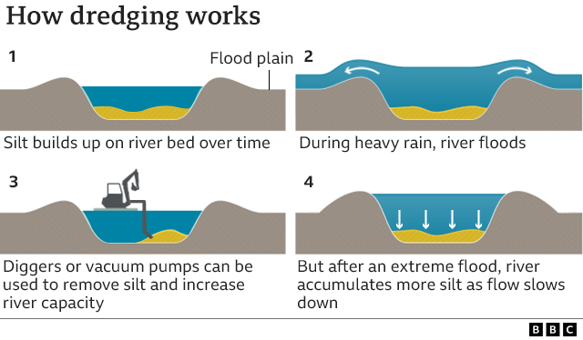
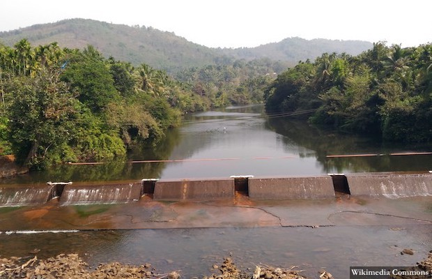
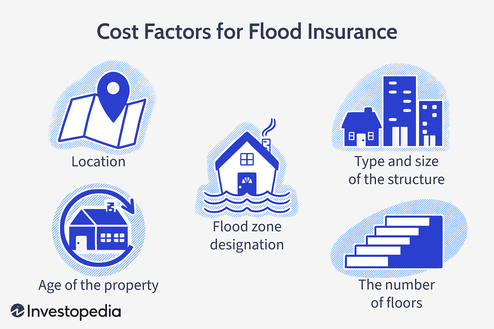
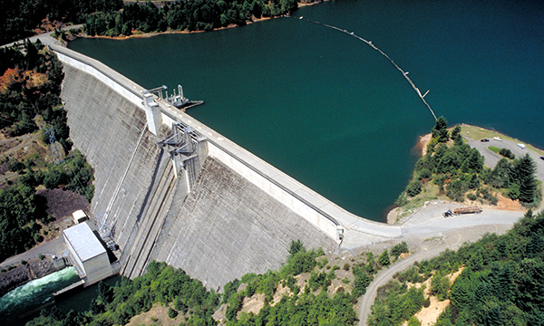
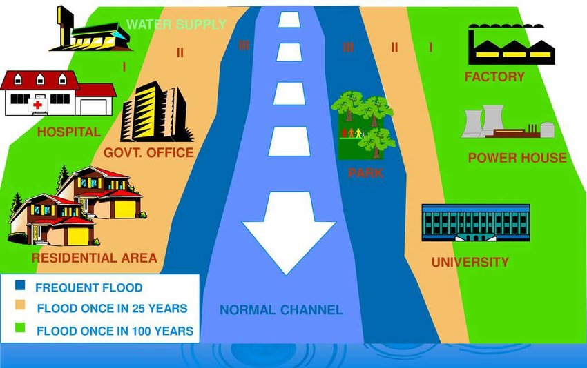
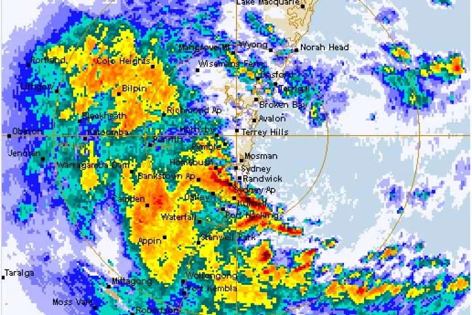
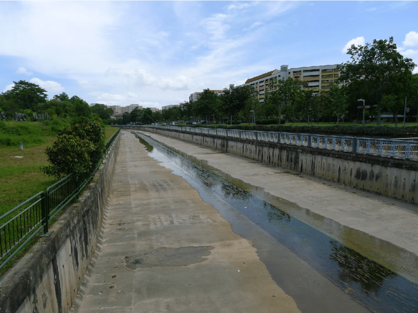
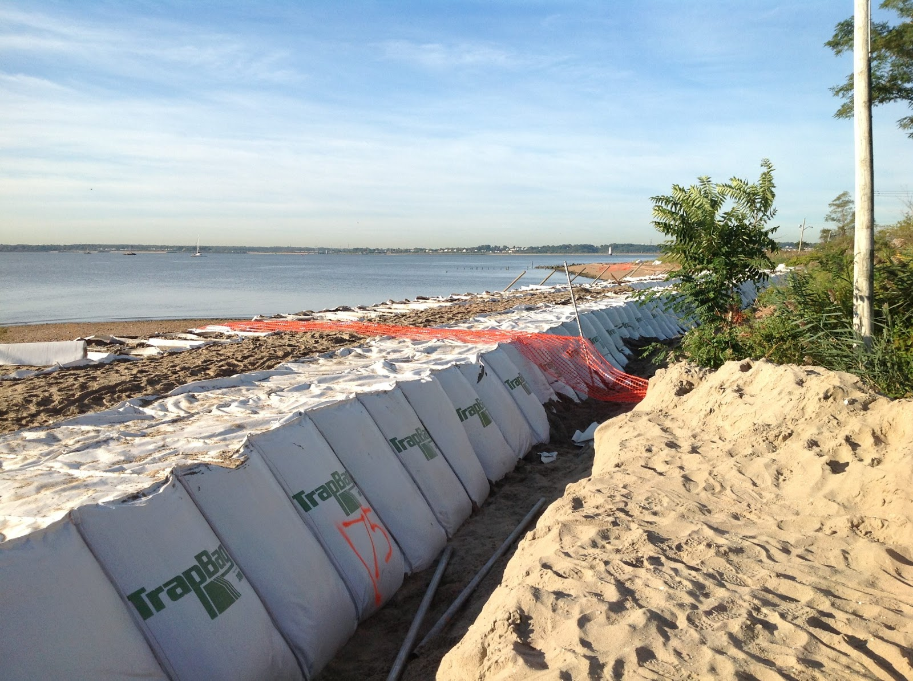
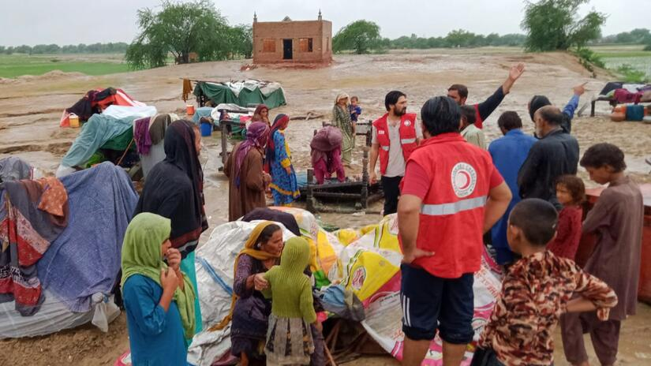

Floods are a recurring natural disaster in India, caused by heavy monsoon rains and cyclones. They can be devastating, affecting millions and causing significant damage to infrastructure, crops, and livestock. Floods can lead to loss of life, displacement, damage to homes and property, and disruption of transportation and communication. Efforts to mitigate the effects of floods in India include early warning systems, flood control measures, and disaster response and relief efforts. However, the frequency and severity of floods in India highlight the need for continued investment in disaster preparedness and infrastructure development to minimize the impact of these natural disasters.
Building embankments is a common method of flood management used in India. Embankments are constructed along river banks to prevent water overflow and flooding in nearby areas. The earthen structures are designed to withstand the force of the water and can be reinforced with stone, concrete, or other materials. While embankments can be effective in reducing the impact of floods, they also have limitations and can sometimes create new problems such as erosion or sedimentation. Careful planning and maintenance are important to ensure that embankments remain effective over time.
Dredging is another common method of flood management used in India. It involves removing silt, debris, and other materials from the riverbed to increase the capacity of the river and prevent flooding. Dredging can be carried out using dredgers or excavators and can be done either by mechanical or hydraulic methods. However, dredging can be expensive and may not be a permanent solution to flooding. It may also cause disruption to the river ecosystem and aquatic life.
Afforestation is an important method of flood management in India. Planting trees in catchment areas helps to reduce soil erosion and improve the water-holding capacity of the soil, which can help to reduce the risk of flooding. Trees also help to slow down the rate of water runoff and increase infiltration into the soil, which reduces the volume of water flowing downstream during heavy rainfall. Additionally, the roots of trees help to stabilize soil, reducing the likelihood of landslides and other forms of erosion.
Flood insurance is an important component of flood management in India. Policies can help residents in flood-prone areas recover losses caused by flooding, including damage to property and loss of income. Flood insurance can provide a financial safety net and help individuals and communities to rebuild and recover after a flood event. However, it is important to note that not all areas are eligible for flood insurance, and policies may have specific limitations or requirements.
Reservoir management is a key aspect of flood management in India. Reservoirs and dams can be used to regulate water flow, especially during periods of heavy rainfall. By storing water during low flow periods, reservoirs can release water gradually during high flow periods, reducing the risk of flooding downstream. Effective reservoir management requires careful monitoring of water levels, weather conditions, and upstream inflows, as well as coordination with local communities and other stakeholders to ensure that water is managed in a sustainable and equitable manner.
Floodplain zoning is a flood management method that involves restricting construction in flood-prone areas. By identifying areas that are most likely to be affected by floods and regulating land use, floodplain zoning can help to reduce the damage caused by floods. This can include measures such as prohibiting construction of new buildings in flood-prone areas or requiring new construction to be elevated above flood levels. Floodplain zoning can also help to protect the environment and preserve natural floodplains, which can provide important ecological benefits.
Flood forecasting is an important tool in flood management in India. Advanced warning systems can be used to predict the likelihood and severity of flooding, which enables people to take necessary precautions and evacuate in a timely manner. Accurate and timely forecasts rely on data from weather monitoring stations, river gauges, and satellite imagery. Flood forecasting can be a valuable tool in reducing the impact of floods and saving lives and property, especially in areas prone to flash flooding.
Channelization is another flood management method used in India. It involves straightening and widening the channels of rivers to increase their capacity and prevent flooding. This method can help to reduce the risk of floods by allowing water to flow more quickly and smoothly. However, it can also have negative impacts on the environment and can disrupt natural ecosystems. Careful consideration must be given to the potential benefits and drawbacks of channelization, and alternatives should be explored where possible.
Erosion control is an important part of flood management in India. Soil erosion can increase the risk of flooding by reducing the capacity of rivers and streams to hold water. To address this issue, measures such as terracing, contour bunding, and construction of check dams are used to reduce soil erosion and prevent sediment from being carried downstream. These techniques also help to improve soil fertility and prevent land degradation, which can have positive impacts on agriculture and other land-based activities.
Community participation is an important aspect of flood management in India. Engaging local communities in the planning and implementation of flood management strategies can increase their preparedness and resilience to flooding. This can involve education and awareness programs, as well as involving local leaders and stakeholders in decision-making processes. When communities are empowered and actively involved in flood management, they can play an important role in reducing the impact of floods and helping to build more sustainable and resilient communities.
In conclusion, flood management in India is a critical issue that requires immediate attention and a multi-pronged approach. Effective measures such as building more robust infrastructure, improving forecasting systems, and implementing better land-use policies can help mitigate the impact of floods. Community involvement and awareness programs are essential to ensure that people are well-prepared and know how to respond in the event of a flood. With concerted efforts from the government, communities, and other stakeholders, India can improve its flood management practices and reduce the devastating impact of floods on its people and economy.